NANDcat
NANDcat
Ein Programm zur Simulation von logischen Schaltungen
- Dies ist das Handbuch zur Anwendung NANDcat.
SEP Wintersemester 2011/2012
Benedikt Lang
Lorentz Roßbacher
Thomas Penteker
Veronika Scholz
Martin Steidele
Betreuer: Peter Barth
1 Einleitung
Die Anwendung NANDcat wurde im Rahmen des Software-Engineering Praktikums
im Wintersemester 2011/12 an der Universität Passau entwickelt.
NANDcat ist ein grafisches Simulationsprogramm, mit dem logische Schaltungen
erstellt, modifiziert und simuliert werden können.
2 Zielgruppen
NANDcat richtet sich vor allem an Schüler und Studierende aus den Bereichen
Informatik und Elektrotechnik, die sich mit Schaltnetzen und -werken
beschäftigen wollen, um bereits vorhandenes Wissen in diesem Bereich zu
erproben, erweitern und zu vertiefen.
3 Starten und Beenden des Programms
NANDcat wurde in JAVA programmiert uns ist somit lauffähig auf jedem Betribebs-
system mit einer Java Virtual Machine. Die Anwendung öffnet sich sobald sie mit
Hilfe einer JVM ausgeführt wird.
Sobald das Hauptarbeitsfenster erscheint kann es vollständig bedient werden.
Das Programm kann entweder über den Menüeintrag "schließen", die Tasten-
kombination Alt+F4 oder durch Drücken des 'X'-Symbols des Fensters
geschlossen werden. Sollte es ungespeicherte Änderungen vor dem Beenden geben,
erscheint eine Warnung mit den Möglichkeiten die Änderungen zu speichern, zu
verwerfen oder zum Programm zurückzukehren.
4 Systemvoraussetzungen
Der Rechner auf dem NANDcat ausgeführt muss mindestens folgende
Systemanforderungen erfüllen.
- Java Runtime Environment 1.6.0 installiert
- Grundsätzlich alle hier aufgelisteten Konfigurationen werden für
das Betriebssystem unterstützt.
- Hardware
- Prozessor mit Leistungsdimension ähnlich einer x86 CPU mit mindestens
2.0GHz Taktrate
- 512MB Arbeitsspeicher
- Monitor mit einer Mindestauflösung von 1024x768 Bildpunkten
- Maus und Tastatur
5 Oberfläche
Die Benutzerobefläche wurde mit Hilfe von Java Swing realisiert und ist einfach
und intuitiv zu bedienen.
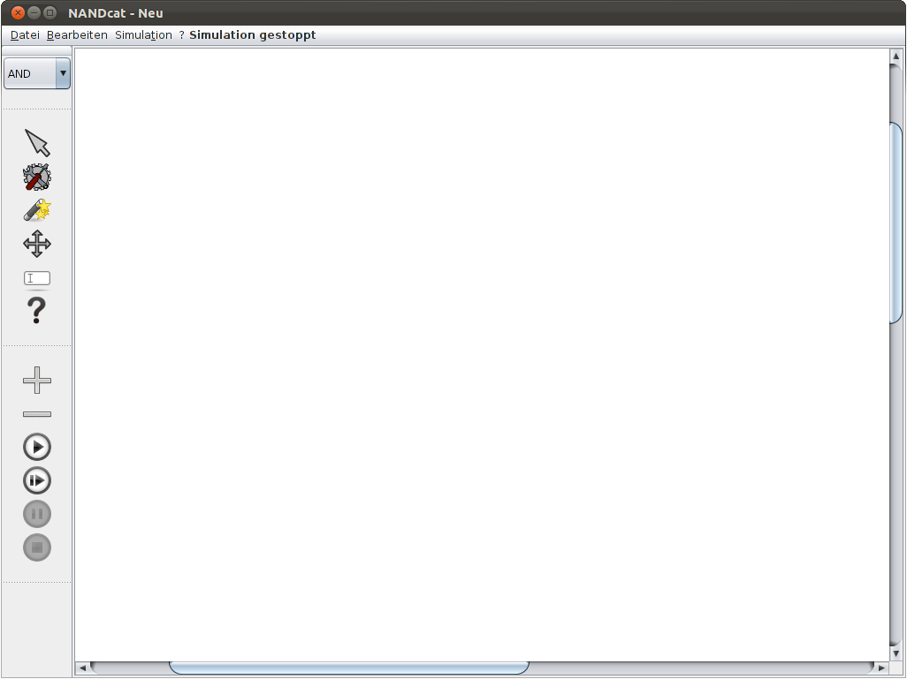
Im Hauptarbeitsfenster gibt es eine Menüleiste, die sämtliche Aktionen, die
das Programm anbietet, enthält.
- Datei: Dieser Reiter enthält sämtliche Funktionen um die Datei zu
bearbeiten. Hierzu gehören das Speichern und (neu-)Laden einer Schaltung.
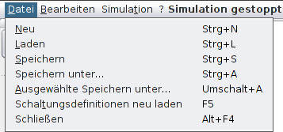
- Bearbeiten: Unter diesem Menüpunkt sind alle Funktionen aufgelistet, die
benötigt werden um eine Schaltung zu bearbeiten.
- Simulation: Hier finden sich alle Funktionen die für die Simulation von
Bedeutung sind, unter anderem Starten und Stoppen der Simulation - ebenso wie
der Checkmanager.
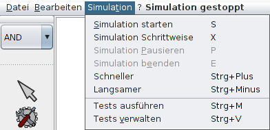
- Der Letzte Reiter der Menüleiste bietet eine kontextsensitive Hilfe an.
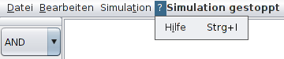
Des weiteren befindet sich auf der linken Seite des Fensters eine Werkzeugleiste,
die die wichtigsten Werkzeuge zum Erstellen und Bearbeiten von Schaltungen und
deren Simulation enthält.
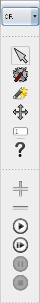
Die Funktion der Werkzeuge ist zum einen an den
Symbolen auf den Knöpfen zu erkennen, zum anderen wird sie in einem Textfenster
angezeigt, wenn man mit der Maus auf dem Knopf verweilt.
Zur Oberfläche gehört ebenfalls ein weiteres Fenster - der Checkmanager -,
das eine Liste aller vom Programm angebotenen Tests auf der Schaltung anzeigt.
Die Tests können aktiviert und deaktiviert werden und beim durchführen
der Tests wird der aktuelle Zustand angezeigt.
5.1 Erstellen von Schaltungen
Zum Erstellen von Schaltungen bietet das Programm folgende Funktionen an:
- Zunächst kann über den Menüeintrag "Neu" oder die Tastenkombination Strg+N
eine neue Schaltung erstellt werden. Wird dieser Punkt ausgewählt und es gibt
ungespeicherte Änderungen in der aktuellen Schaltung erscheint eine Warnung.
Außerdem kann die aktuelle Schaltung durch Drücken von F5 neu geladen werden.
- Platzieren eines Bausteines:
Zunächst muss das Programm in den Erstellenmodus versetzt werden.
Dazu muss der "Erstellen"-Knopf gedrückt,
der Menüpunkt gewählt oder die Tastenkombination Strg+E betätigt werden.
Daraufhin kann in der Liste über dem Auswahlknopf ein Baustein ausgewählt
werden.
Bewegt man nun die Maus über die Arbeitsfläche erscheint ein Vorschaurechteck,
das anzeigt wo der Baustein plaziert wird.
Mit einem Mausklick auf die Arbeitsfläche wird der Baustein dann an der
gewünschten Stelle erstellt. Überschneidungen zwischen Bausteinen sind nicht
zulässig. Darum wird das Vorschaurechteck auch nicht angezeigt wenn ein
platzieren des Bausteines an der aktuellen Position des Mauszeigers wegen
Überschneidungen nicht möglich ist.
Die Anwendung bietet drei verschiedene Darstellungsformen der Bausteine an.
Diese kann über den Menüpunkt Layout ausgewählt werden.
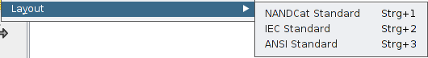
Vom Programm werden folgende Bausteine standardmäßig angeboten:
NANDcat IEC-Standard ANSI-Standard
- Nicht/Not
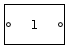 
- Und/And
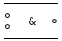 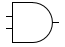
- Oder/Or
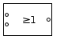 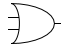
- Identität: Zum aufspalten einer Leitung.
Der Eingangswert wird auf zwei ausgehende Leitungen gelegt.
 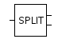
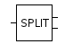
- RS-FlipFlop
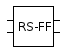
- Taktgeber: Der Standardtakt ist 1 und beim Erstellen
ist das Signal auf "aus".
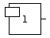
- Lampe
- Erstellen einer Verbindung: Eine Verbindung kann zwischen zwei Ports
erstellt werden. Dazu muss das Programm wieder im Erstellenmodus sein.
Als erstes klickt man auf den Port, von dem aus die Verbindung gezogen werden
soll.
Wenn man jetzt die Maus bewegt sieht man eine Vorschaulinie,
die man zum nächsten Port ziehen kann, zu dem die Verbindung verlaufen soll.
Mit einem zweiten Klick wird die Verbindung erstellt.
- Achtung:
-
Es sind nicht alle Verbindungen zulässig.
- Ein ausgehender Port kann nur mit einem eingehenden Port verbunden werden.
Die Maus zeigt an, wenn sie sich über einem nicht zulässigen Port befindet.
Ein Klick auf diesen Port bewirkt nichts.
- Ein Port kann jeweils nur mit einem einzigen anderen Port in Verbindung
stehen. Wenn auf einen Port geklickt wird, der bereits verbunden
ist, wird die bestehende Verbindung durch die neue ersetzt.
- Innerhalb eines Gatters können keine Verbindungen zwischen Ports
gesetzt werde. Eine Verbindung zu sich selbst ist also nicht möglich. Ebenso
ist es auch nicht möglich ein Gatter mit Hilfe von Identitätsgattern mit sich
selbst zu verbinden.
5.2 Bearbeiten von Schaltungen
Sobald der erste Baustein auf der Arbeitsfläche platziert ist, kann die
Schaltung modifiziert werden. Dazu muss das Programm in den entsprechenden
Modus gesetzt werden.
Dies geschieht durch Klicken auf den "Auswahl"-Knopf,
Wählen des Menüpunktes oder durch Drücken der Tasten Strg+W.
In diesem Modus werden die Bausteine zunächst ausgewählt um dann entsprechend
bearbeitet werden zu können.
- Auswählen von Bausteinen: durch Klicken auf einen Baustein wird dieser
ausgewählt und rot markiert.
Durch klicken und ziehen der Maus wird ein
Auswahlrechteck gezogen, mit dessen Hilfe beliebig viele Elemente ausgewählt
werden können - vorausgesetzt die Maus befindet sich beim anklicken nicht auf
einem Baustein.
- Verschieben: Wenn Bausteine bereits markiert sind, können diese verschoben
werden, in dem man sie mit der gedrückten Maustaste zieht.
wird nach dem Verschieben zu:
Ebenso können einzelne Bausteine durch auswählen mit der Maus und ziehen mit
gedrückter Maustaste bewegt werden.
Die Verbindungen werden an die neue Position der Bausteine angepasst.
- Löschen: Durch drücken der Entfernen-Taste auf der Tastatur oder wählen
des Menüpunktes werden alle selektierten Elemente gelöscht. Beim Löschen eines
Bausteines werden auch sämtliche eingehenden und ausgehenden Verbindungen zu
anderen Bausteinen gelöscht.
 wird nach dem Löschen zu:
wird nach dem Löschen zu:

- Bennenen von Bausteinen:
Mit Hilfe des "Benennen"-Werkzeuges,
des Menüpunktes oder über die Tastenkombination Strg+A können Bausteine benannt
werden. Dazu einfach das Werkzeug auswählen und auf den zu benennenden Baustein
klicken. Daraufhin erscheint ein Dialogfenster in dem die Benennung eingetragen
werden kann.
Diese erscheint daraufhin unterhalb des Bausteins und kann durch erneutes
Auswählen mit Hilfe des Werkzeugs bearbeitet werden.
- Setzen des Zustand von Taktgebern:
Durch Drücken des "Zustand"-Werkzeuges in der Menüleiste,
Wählen des Menüpunktes oder über die Tastenkombination Strg+T wird das
Werkzeug ausgewählt, mit dem der Zustand eines Schalters geändert werden kann.
Durch Drücken der linken Maustaste auf einen Taktgeber verändert sich dessen
Zustand. War das ausgehende Signal zunächst an, ist es jetzt aus und andersherum.
Drückt man mit der rechten Maustaste auf den Taktgeber erscheint ein
Dialogfenster in das man die gewünschte Taktfrequenz für den Taktgeber eingeben
kann.
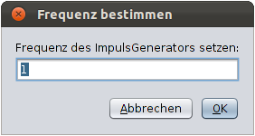
Standardmäßig ist der Taktgeber auf "aus" eingestellt und hat die Takt-
frequenz 1.
- Taktfrequenz:
-
Die Zahl die die Taktfrequenz angibt legt fest wie lange der Taktgeber sein
aktuelles Signal hält. Bei einer Taktfrequenz von 3 und bei Startzustand "aus"
gibt der Taktgeber für die ersten drei Takte kein Signal weiter, für die
nächsten drei das Signal "an", bis er schließlich wieder das Signal wechselt.
- Anordnen der Bausteine mittels eines Gitters:
Über den Menüpunkt "Gitter ein-/ausblenden" oder die Tastenkombination Strg+G
wird ein Gitter auf der Arbeitsfläche eingeblendet anhand dessen sich die
Bausteine ausrichten. Solange das Gitter sichtbar ist werden alle neu
platzierten Bausteine daran angepasst.
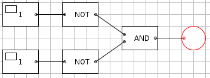
Bei erneuter Auswahl der Option wird das Gitter ausgeblendet. Die aktuelle
Ausrichtung der Bausteine bleibt jedoch bestehen.
5.3 Speichern und Laden
5.3.1 Schaltungen speichern und laden
Eine erstellte Schaltung kann über folgende Menüpunkte und Tastenkürzel
abgespeichert werden:
- "Speichern", Strg+S: Speichert die Schaltung in der zuletzt verwendeten
Datei. Wenn für die Schaltung noch keine Datei verwendet wurde erscheint ein
Verzeichnismanager, mit dem der Zielordner und der Name der Datei bestimmt
werden kann. Der Name der Datei muss eindeutig gewählt werden. Ebenfalls muss
ein Dateiformat ausgewählt werden. Zur Verfügung stehen:
- Das SEPAF (SEP-Austauschformat):
Beim Speichern der Schaltung in dieses Format ist ein späteres bearbeiten der
Schaltung oder verwenden als Baustein möglich.
- PNG:
Die aktuelle Schaltung wird als Bild im PNG-Format exportiert. Sie kann dann
nicht mehr in die Anwendung importiert und bearbeitet werden.
- "Speichern unter", Strg+A: Hier kann direkt das Verzeichnis in der die
Datei liegen soll und ihr Name bestimmt werden, auch wenn die Datei bereits
vorher in einem anderen Verzeichnis oder unter einem anderen Namen abgelegt
wurde.
- "Ausgewählte speichern unter", Umschalt+A: Mit Hilfe dieser Option werden
nur die vom Benutzer selektierten und rot markierten Bausteine im Zielordner
gespeichert. Markierte Verbindungen werden nur mitgespeichert, wenn sie zwei
selektierte Bausteine miteinander verbinden.
Sind keine Bausteine selektiert erscheint eine Fehlermeldung und der Export
wird nicht durchgeführt.

- Des Weiteren gibt es die Möglichkeit die Schaltung zu speichern, bevor eine
neue Schaltung erstellt wird, oder die Anwendung geschlossen wird. In diesen
Fällen erscheint eine Warnmeldung falls ungespeicherte Änderungen bestehen.
Eine gespeicherte Schaltung kann über dem Menüpunkt "Laden" oder über Strg+L
aus dem abgespeicherten Verzeichnis geladen und wieder vollständig
überarbeitet werden. Sollte die ausgewählte Datei nicht dem von der Anwendung
vorgesehenem SEPAF (SEP-Austauschformat) genügen, erscheint eine Fehlermeldung
und der Import wird nicht ausgeführt.

5.3.2 Schaltungen als Baustein speichern
Eine Schaltung kann in einem neuen Schaltplan als eigener Baustein verwendet
werden. Dazu muss die Schaltung entsprechend abgespeichert werden. Man wählt die
Option "Speichern unter" und legt die Datei im SEPAF (SEP-Austauschformat) in
den Ordner ab, der die Anwendung NANDcat enthält.
Daraufhin erscheint ein Dialogfenster mit Hilfe dessen ein Bild im PNG-Format
ausgwählt werden kann, das dann als Symbol auf dem Baustein erscheint.
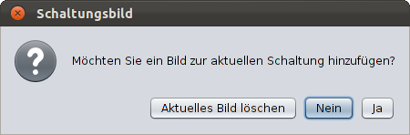
Achtung:
Wichtig zu beachten ist, dass beim Speichern einer Schaltung als Baustein die
Taktgeber zu den eingehenden Ports des Bausteins umgewandelt werden und die
Lampen zu den ausgehenden Ports. Sind an Ports keine Taktgeber oder Lampen
angelegt, so kann auf diese Ports im benutzerdefinierten Baustein auch nicht
zugegriffen werden.
5.3.3 Benutzerdefinierte Bausteine laden
Bausteine die bereits vor dem Programmstart als benutzerdefinierte Bausteine
abgespeichert wurden werden direkt beim Programmstart in der Liste der Bausteine
mit aufgeführt und können wie jeder andere Baustein verwendet werden.
Wird eine Schaltung zur Laufzeit des Programms als Baustein abgespeichert können
die Schaltungsdefinitionen über den Menüpunkt "Schaltungsdefinition neu laden"
oder durch Drücken der F5-Taste neu geladen werden.
Wurde ein Bild für die Schaltung ausgewählt so erscheint dieses als Symbol auf
dem platzierten Baustein.
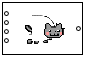
Wurde keines ausgewählt so wird der Name der Schaltung angezeigt.
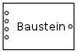
Sollte es beim importieren dieser Schaltungen Probleme geben, erscheint wie
beim Laden ein Warnfenster und der Import wird abgebrochen. Der Baustein steht
dann nicht zur Verfügung.
5.4 Verändern des angezeigten Bildbereichs
Der aktuelle Bildbereich, der dem Benutzer auf der Anwendung angezeigt wird kann
folgendermaßen verändert werden:
- Betätigen der Scrollbalken mit der Maus.
Dadurch wird das Bild entsprechend den Bildlaufleisten angepasst.
- Benutzen des Scrollrades auf der Maus.
Bei einfachem Scrollen wird der Bildbereich vertical verschoben. Drückt man
gleichzeitig die Shift-Taste wird der Bildbereich horizontal verschoben.
- Mit Hilfe des "Bewegen"-Werkzeugs:
Durch Drücken des entprechenden Knopfes
oder über die Tastenkombination Strg+B wird das Werkzeug aktiviert. Mit
gedrückter Maustaste kann nun der Bildbereich nach belieben bewegt werden und
die Ansicht wird dem aktuellen Bildbereich angepasst.
5.5 Simulation
Das Verhalten der erstellten Schaltung kann simuliert werden. Simulation
bedeutet, dass der aktuelle Zustand der Elemente, also der Bausteine und ihrer
Verbindungen zu den verschiedenen Taktzyklen angezeigt wird. Der Zustand
kann hierbei entweder logisch 1 oder logisch 0 sein.
5.5.1 Simulation durchführen
Die Simulation der Schaltung kann auf folgende Weisen gesteuert werden:
- Simulation starten:
Erfolgt entweder über Drücken des "Simulation starten" Knopfes in der
Werkzeugleiste.
Auswählen des Menüpunktes "Simulation starten" oder Drücken der 'S' Taste.
Vor dem Start der Simulation werden die ausgewählten Schaltungstests
durchgeführt. Sobald einer dieser Tests fehlschlägt wird die Simulation nicht
durchgeführt. Die Ergebnisse der Tests lassen sich im Checkmanager ablesen.
Sind alle Tests erfolgreich durchlaufen startet die Simulation und wird auf der
Arbeitsfläche angezeigt. In der oberen Menüleiste läuft ein Zähler
"Simulationsdurchlauf", der die Nummer des aktuellen Taktes wiedergibt.
Während der Simulation ist das Bearbeiten der Schaltung nicht möglich. Es
können einzig Bausteine verschoben werden und die Schaltung kann als Bild
exportiert werden und somit einen bestimmten Takt im Simulaitonszyklus
festzuhalten.. Die Funktionen zum Erstellen, Löschen oder Setzen von Schaltern
werden nicht angeboten und die entsprechenden Knöpfe und Menüpunkte sind
ausgegraut und können nicht angewält werden.
- Simulation beenden:
Beendet wird die Simulation entweder über Betätigen des "Simulation stoppen"
Knopfes,
Auswahl des Menüpunktes "Simulation beenden" oder Drücken der 'E'
Taste auf der Tastatur. Daraufhin wird die Simulation beendet und keine
Belegung der Elemente mehr angezeigt. Nun ist wieder das volle Bearbeiten der
Schaltung möglich und die Simulation kann erneut gestartet werden.
- Pause der Simulation:
Über die Pausetaste, den Menüpunkt oder die Tastenkombination
kann die Simulation vorübergehend pausiert werden. Die Schaltung zeigt
während der Pause die aktuellen Belegungen
der Elemente an.
Mit Hilfe des "Fortfahren"-Knopfes
oder durch Drücken der 'x'-Taste wird der nächste Schritt der Simulation
berechnet und angezeigt. Durch Stoppen wird sie beendet.
- Erhöhen und Verringern der Simulationsgeschwindigkeit:
Die Geschwindigkeit der Simulation kann verringert/erhöht werden durch
/ Drücken der "-"-/"+"-Taste,
Auswählen des Menüpunktes "Schneller"/"Langsamer" oder
durch Drücken der Tastenkombination Strg+Minus/Strg+Plus.
Die Simulationsgeschwindigkeit kann wieder auf die Standardgeschwindigkeit
gesetzt werden, über den Menüpunkt "Setze Standardsimulationsgeschw" oder die
Tastenkombination Strg+O.
5.5.2 Was bedeutet die Anzeige der Simulation
- Taktgeber:
Die Tagtgeber können entweder an oder aus sein. Das bedeutet
sie leiten entweder das Signal logisch 1 oder logisch 0 weiter. Ob ein Taktgeber
gerade an oder aus ist, erkennt man an dem linken oberen Rechteck. Wenn dieses
gelb eingefärbt ist, so ist der Taktgeber auf logisch 1 eigestellt, ansonsten
auf logisch 0.
- Taktgeber mit Signal 0:
- Tagtgeber mit Signal 1:
Mit Hilfe des Menüpunkts "Setze alle Schalter auf Aus" oder durch Drücken der
Tasten Strg+R werden alle Taktgeber auf den Zustand logisch 0 gesetzt.
- Ports und Leitungen:
Sind die Ports oder die Leitungen mit dem Signal logisch 1 belegt, so werden
diese gelb angezeigt - ansonsten schwarz.
- Lampe:
Sobald an der Lampe ein Signal anliegt wird sie gelb ausgefüllt. Andernfalls
bleibt die Füllfarbe weiß.
- Gatter:
Die Gatter selber haben keinen Zustand und werden deshalb auch nicht anders
angezeigt. Die Gatter sind während der Simulation dafür zuständig das eingehende
Signal richtig zu verarbeiten, den Ports mitzuteilen und mit Hilfe derer an
die ausgendenden Leitungen weiterzuleiten.
5.5.3 Der Checkmanager
Der Checkmanager ist ein Fenster, das eine Liste aller Tests die auf der
Schaltung durchgeführt werden können. Durch anklicken eines Tests kann dieser
aktiviert und deaktiviert werden. Ein aktiver Test ist an dem Haken in dem
Kästchen links neben der Beschreibung des Tests zu erkennen. Rechts neben diesem
Auswahlkästchen zeigt ein Symbol den aktuellen Stand des Tests.
Beim Programmstart sind zunächst alle Tests selektiert und es wurde noch
keiner ausgeführt.
Das Fragezeichen bedeutet, dass der Test noch nicht auf der aktuellen Schaltung
ausgeführt wurde und das Ergebnis nicht bekannt ist.
Das Ausrufezeichen zeigt an, dass der Test gerade ausgeführt wird, jedoch noch
nicht zu Ende gerechnet wurde und das Ergebnis noch nicht feststeht.
Der grüne Haken bedeutet, dass der Test ausgeführt und erfolgreich bestanden
wurde.
Das rote Kreuz bedeutet, dass der Test ausgeführt, jedoch nicht bestanden
wurde.
Die Anwendung bietet folgende Tests auf der Schaltung an:
- Rückkopplungstest: Schlägt fehlt, sobald eine Rückkopplung innerhalb der
Schaltung vorliegt.
- Test auf mehrfache Verbindungen: Testet ob es mehrere eingehende Verbindungen
in einen Eingangsport gibt.
- Verwaisungstest: Prüft ob es einzelne Bausteine gibt, die mit keinem weiteren
Baustein der Schaltung verbunden sind.
- Quellentest: Prüft ob jeder Baustein direkt oder zumindest indirekt mit einer
Quelle in Verbindung steht. Eine Quelle ist in diesem Fall ein Taktgeber.
- Senkentest: Testet ob jeder Baustein (in)direkt mit einer Senke in
Verbindung steht. Als Senke gelten die Lampen in der Schaltung.
Auf dem unteren Fensterrand des Checkmanagers befinden sich zwei Knöpfe, "OK"
und "Starten". Durch Drücken auf "OK" werden sämtliche Änderungen übernommen und
das Fenster geschlossen. Bei Betätigen des "Starten"-Knopfes werden die ausgewählten
Tests durchgeführt. Hierbei bleibt der Checkmanager geöffnet und zeigt die
Ergebnisse der Tests wie oben beschrieben an.
5.6 Kontextsensitive Hilfe
NANDcat bietet eine Funktion zur kontextsensitiven Hilfe an. Um diese zu
aktivieren kann man entweder den Menüpunkt "Hilfe" auswählen, die
Tastenkombination Strg+I betätigen
oder einfach auf den entsprechenden Knopf drücken.
Daraufhin verändert sich der Mauszeiger und zeigt ein Fragezeichen neben dem
Pfeil an. Nun kann man auf einen beliebigen Teil der Anwendung klicken und es
erscheint ein Fenster, das einen entsprechenden Eintrag aus dem Handbuch
enthält, der die Programmkomponente erklärt.
6 Was NANDcat nicht kann
- In der Anwendung kann immer nur eine einzige Schaltung bearbeitet werden.
Es gibt nicht die Möglichkeit eine weitere Schaltung in einem neuen Fenster oder
Tab zu öffnen.
- NANDcat bietet nicht die Möglichkeit Schaltungen anhand von booleschen
Funktionen zu generieren.
- Physikalische Effekte, die in der Realität auftreten können (z.B. Fanout-
Beschränkungen) werden nicht berücksichtigt.
7 Haftungsausschluss
Die Software wurde mit größter Sorgfalt entwickelt und auf verschiedenen
Rechnersystemen sorgfältig getestet. Dabei waren für die freigegebene
Produktversion keine Fehler festzustellen. Es kann aber nicht garantiert
werden, dass die Software auf jedem Zielsystem hundertprozentig fehlerfrei
läuft. Eine vollständig fehlerfreie Software ist nach dem heutigen Stand der
Technik nicht möglich. Deshalb übernehmen wir keine Haftung für
Unverträglichkeiten mit Hardwarekomponenten und anderen Softwareprodukten oder
deren Komponenten. Die Software wird wie sie ist ("as is") zur Verfügung
gestellt, ohne jede Garantie für die Brauchbarkeit für einen bestimmten
Anwendungsfall. Das gesamte Risiko, das aus der Nutzung der Software entsteht,
liegt beim Anwender der Software. Für Schäden, die direkt oder indirekt aus der
Nutzung der Software resultieren, sind wir unter keinen Umständen haftbar zu
machen, es sei denn, es liegt ein vorsätzliches oder grob fahrlässiges
Verhalten unsererseits vor. Die beiliegende Dokumentation/Hilfe der Software
erhebt keinen Anspruch auf Richtigkeit und Vollständigkeit.
8 Glossar
- FlipFlop
Grundbaustein sequentieller Schaltungen, der logisch wahr und logisch
falsch speichern kann
- Swing
Programmierschnittstelle und Grafikbibliothek zum Programmieren von
grafischen Benutzeroberflächen in Java}
- Taktgeber
In Zusammenhang mit Schaltungselementen ein Baustein mit der Aufgabe ein
Ausgangssignal in einer bestimmten Frequenz bereitzustellen
- Fan-Out
Fähigkeit eines (elektrischen) Gatters, die benötigte elektrische Spannung
und Stromstärke an seinen Ausgängen für den fehlerfreien Betrieb sicherzustellen